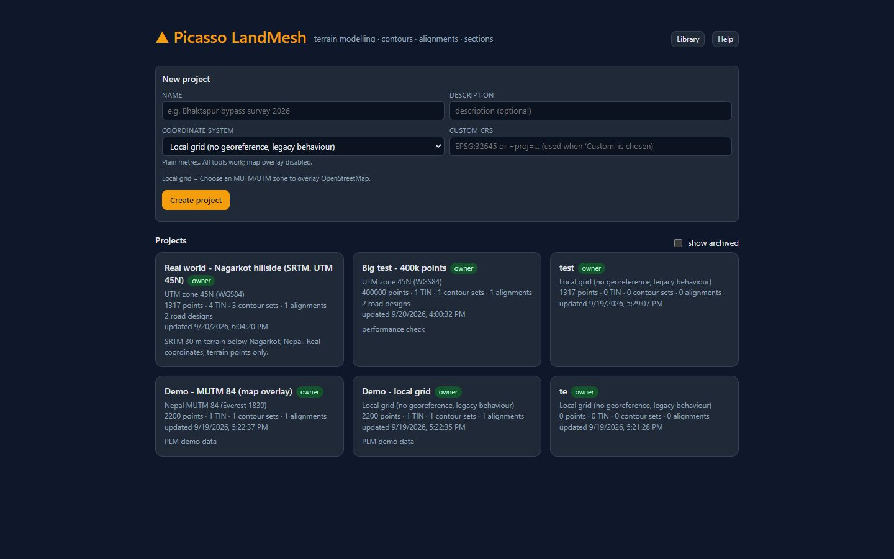
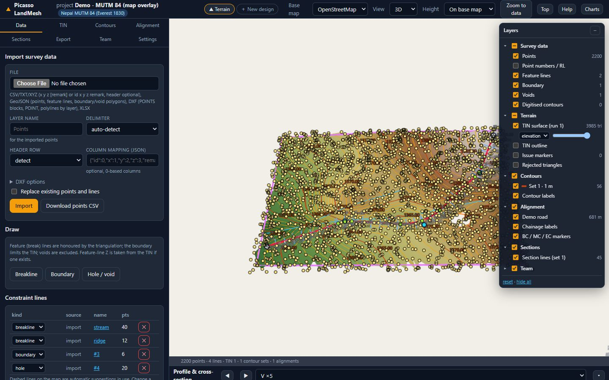
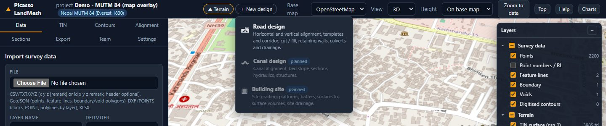

Getting started
Picasso LandMesh (PLM) turns survey points into a terrain model, contours, alignments and sections in the browser, and designs roads on that terrain: horizontal and vertical alignment, cross-sections, earthworks, structures, drawings and quantities.
What Picasso LandMesh does
Terrain module
Import points from CSV, DXF or GeoJSON, review the survey limit and gaps, build a constrained terrain model, generate contours, draw alignments, cut profiles and cross-sections, and export everything for AutoCAD or QGIS. Read more
Road design module
Open an alignment as a road design pinned to a terrain snapshot. Work through seven stages, from IPs and curves to the drawing sheets, with every value checked against the design standard. Read more
Working together
Projects have one owner who shares them with editors and viewers. Comments can be pinned on the map, every change is logged, and finished work is archived and catalogued in the Library. Read more
Finding your way around

Every project opens in the terrain workspace. The map fills the screen; the side panel on the left holds the tabs Data, TIN, Contours, Alignment, Sections, Export, Team and Settings; the Layers panel at the top right switches map layers on and off; the status bar at the bottom shows the coordinates and the terrain level under the cursor.

The module switcher in the top bar moves between the terrain workspace and the design workspaces of the same project. ＋ New design creates a design from the current terrain model.

Your first project
- Create a project. Give it a name and choose the coordinate system. Pick the MUTM or UTM zone of the survey when you know it: the terrain is then placed on OpenStreetMap or imagery. Choose local grid for legacy surveys in plain metres (you can place a local grid on the map later, under Settings).
- Import survey points in the Data tab: a CSV, text or Excel file with point number, easting, northing and level, a DXF with point blocks or points, or GeoJSON. Check the column mapping before you import.
- Check the constraint lines. Boundaries, holes and breaklines control the terrain model. Import them from DXF layers, draw them on the map, or let the software suggest the survey limit and gaps (TIN tab).
- Build the TIN in the TIN tab. The run card tells you how many triangles were kept, how many were rejected and why, and whether the model passed validation.
- Generate contours in the Contours tab: interval, index contours, smoothing, labels and colours. Several contour sets can exist side by side.
- Draw an alignment in the Alignment tab by clicking IPs on the map and typing curve radii, then generate profile and cross-sections in the Sections tab.
- Export a DXF for AutoCAD, a GeoPackage for QGIS or CSV tables from the Export tab, or press Open in Road design ▸ on the alignment to start the road design.
Guest or account?
You can try the software without an account when the administrator has enabled the guest sandbox: a few small projects, a limited number of points and terrain builds, no downloads, deleted after some days. Accounts are created by the administrator (invite only). When you sign in, the sandbox projects you made as a guest become yours. Details are on the Accounts & sharing page.
Preparing survey data
| Format | What is read | Notes |
|---|---|---|
| CSV / TXT / XYZ / XLSX | Point number, easting, northing, level, optional remark (or just x y z) | Comma, semicolon, tab or space separated; header row optional; the column mapping can be corrected before import. Excel sheets are read the same way. |
| DXF | Points and point blocks from the chosen point layers; polylines from feature-line layers | Layer names default to Points, Points-Blk and Features. Boundary, void and contour layers become constraint lines of the matching kind. |
| GeoJSON | Point and line features | Coordinates must be in the project coordinate system. |
| Alignment CSV | *_aln.csv: IP count and start chainage, then N, X, Y, R rows; a fifth column holds the transition length | The layout of the legacy Road files; the same file is written by Download CSV. |
Getting help
- The Help button in the top bar of every workspace opens the page of this manual for that workspace; the Output stage of a road design opens the section on drawings and exports.
- Hover over a field or a check to see its explanation; badges such as verify or placeholder are explained on the Standards & checks page.
- Common messages and what to do about them are collected under Troubleshooting.